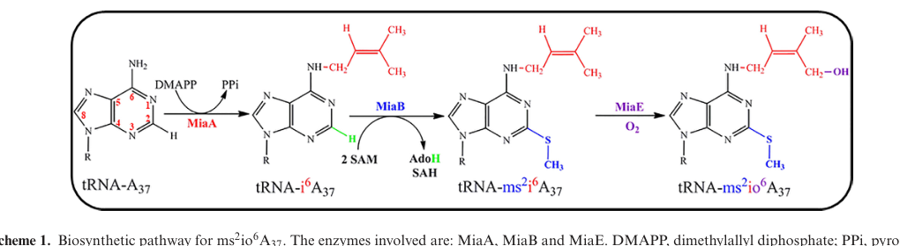

miaE encodes a diiron tRNA monooxygenase that hydroxylates ms2i6A37 to form ms2io6A37 in specific tRNAs.
| GO Term | Evidence | Action | Reason |
|---|---|---|---|
|
GO:0006400
tRNA modification
|
IEA
GO_REF:0000002 |
ACCEPT |
Summary: tRNA modification captures the biological process containing MiaE's specific hydroxylation reaction.
Reason: The P. putida MiaE publication and UniProt entry establish MiaE as a tRNA-hydroxylase enzyme acting on position 37 of tRNA.
Supporting Evidence:
PMID:32785618
The function of the protein as a tRNA-hydroxylase enzyme is established
file:PSEPK/miaE/miaE-goa.tsv
GO:0006400 tRNA modification
file:PSEPK/miaE/miaE-deep-research-falcon.md
MiaE is the terminal enzyme in the A37 hypermodification branch leading to **ms2io6A37**.
|
|
GO:0045301
tRNA 2-(methylsulfanyl)-N(6)-isopentenyladenosine(37) hydroxylase activity
|
IEA
GO_REF:0000120 |
ACCEPT |
Summary: The IEA GO:0045301 row is the exact molecular function for MiaE.
Reason: GO:0045301 names the ms2i6A37 hydroxylase activity described by UniProt and the experimental publication.
Supporting Evidence:
file:PSEPK/miaE/miaE-uniprot.txt
Catalyzes the oxygen-dependent hydroxylation
file:PSEPK/miaE/miaE-goa.tsv
GO:0045301 tRNA 2-(methylsulfanyl)-N(6)-isopentenyladenosine(37) hydroxylase activity
file:PSEPK/miaE/miaE-deep-research-falcon.md
*P. putida* MiaE **strongly prefers ms2i6A37 over i6A37** as a substrate.
|
|
GO:0045301
tRNA 2-(methylsulfanyl)-N(6)-isopentenyladenosine(37) hydroxylase activity
|
EXP
PMID:32785618 Structural, biochemical and functional analyses of tRNA-mono... |
ACCEPT |
Summary: The EXP GO:0045301 row directly supports the same specific MiaE molecular function.
Reason: The P. putida MiaE study purified and characterized the enzyme and established the tRNA hydroxylase function.
Supporting Evidence:
PMID:32785618
The function of the protein as a tRNA-hydroxylase enzyme is established
file:PSEPK/miaE/miaE-uniprot.txt
EC=1.14.99.69
file:PSEPK/miaE/miaE-deep-research-falcon.md
expressing PP_2188 in *E. coli* (which lacks miaE and accumulates ms2i6A37) led to **appearance of ms2io6A37**, demonstrating that ms2i6A37-containing tRNAs are physiological substrates.
|
Q: Which KT2440 tRNA isoacceptors carry the ms2io6A37 product under aerobic and low-oxygen growth conditions?
Experiment: Compare tRNA nucleoside profiles from wild-type and miaE knockout KT2440 cells across oxygen conditions by LC-MS.
Type: tRNA modification profiling
The research report should be a detailed narrative explaining the function, biological processes, and localization of the gene product. Citations should be given for all claims.
You should prioritize authoritative reviews and primary scientific literature when conducting research. You can supplement
this with annotations you find in gene/protein databases, but these can be outdated or inaccurate.
We are specifically interested in the primary function of the gene - for enzymes, what reaction is catalyzed, and what is the substrate specificity? For transporters, what is the substrate? For structural proteins or adapters, what is the broader structural role? For signaling molecules, what is the role in the pathway.
We are interested in where in or outside the cell the gene product carries out its function.
We are also interested in the signaling or biochemical pathways in which the gene functions. We are less interested in broad pleiotropic effects, except where these elucidate the precise role.
Include evidence where possible. We are interested in both experimental evidence as well as inference from structure, evolution, or bioinformatic analysis. Precise studies should be prioritized over high-throughput, where available.
The UniProt target Q88KV1 corresponds to PP_2188 in Pseudomonas putida KT2440 and was experimentally validated to encode MiaE, a tRNA 2-(methylthio)-N6-isopentenyladenosine(37) hydroxylase/monooxygenase that converts ms2i6A37 → ms2io6A37 in tRNA (Carpentier et al., Nucleic Acids Research, Aug 2020; https://doi.org/10.1093/nar/gkaa667). (carpentier2020structuralbiochemicaland pages 4-5, carpentier2020structuralbiochemicaland pages 1-2)
Position 37 in tRNA is the purine immediately 3′ of the anticodon (position 36). Modifications at/near the anticodon (positions 34 and 37) are widely understood to enhance codon-decoding specificity, increase ribosomal binding affinity, maintain the translational reading frame, and promote correct tRNA/mRNA translocation. (carpentier2020structuralbiochemicaland pages 1-2)
A key set of A37 modifications involves a three-step pathway:
1) MiaA installs i6A37 (N6-isopentenyladenosine) by transferring an isopentenyl group from DMAPP to A37.
2) MiaB converts i6A37 to ms2i6A37 by methylthiolation (radical-SAM/Fe–S enzyme).
3) MiaE hydroxylates ms2i6A37 → ms2io6A37 in an O2-dependent reaction.
This ordering and enzymology are summarized explicitly for the ms2io6A37 pathway. (carpentier2020structuralbiochemicaland pages 1-2)
MiaE is defined as an O2-dependent tRNA monooxygenase/hydroxylase that performs allylic hydroxylation of the isopentenyl side chain of ms2i6A37 (in selected tRNAs), yielding ms2io6A37. (carpentier2020structuralbiochemicaland pages 1-2, carpentier2020structuralbiochemicaland pages 10-12)
For P. putida KT2440, MiaE (PP_2188/Q88KV1) catalyzes the O2-dependent hydroxylation reaction:
tRNA-A37(ms2i6A) + O2 + reducing equivalents → tRNA-A37(ms2io6A) + H2O (overall monooxygenase chemistry)
Direct evidence in P. putida MiaE work shows conversion of ms2i6A to ms2io6A in vivo (chromatographic and MS-based detection of substrate depletion and product formation). (carpentier2020structuralbiochemicaland pages 5-7, carpentier2020structuralbiochemicaland media e79c89a5)
P. putida MiaE strongly prefers ms2i6A37 over i6A37 as a substrate. (carpentier2020structuralbiochemicaland pages 2-3, carpentier2020structuralbiochemicaland pages 1-2)
The Carpentier et al. study used a bacterial system naturally lacking miaE to demonstrate functional specificity: expressing PP_2188 in E. coli (which lacks miaE and accumulates ms2i6A37) led to appearance of ms2io6A37, demonstrating that ms2i6A37-containing tRNAs are physiological substrates. (carpentier2020structuralbiochemicaland pages 4-5, carpentier2020structuralbiochemicaland pages 5-7)
MiaE is a non-heme diiron enzyme. Spectroscopic evidence (including EPR features consistent with mixed-valent FeII/FeIII states characteristic of oxygen-activating diiron enzymes) and crystallography support a dinuclear iron center (with an oxo bridge) as the catalytic core. (carpentier2020structuralbiochemicaland pages 4-5, carpentier2020structuralbiochemicaland pages 1-2, carpentier2020structuralbiochemicaland pages 7-9)
Crystallographic ligation details in P. putida MiaE include iron coordination by histidines and glutamates (carboxylate-bridged non-heme diiron architecture), consistent with the assigned ferritin-like/non-heme diiron superfamily fold. (carpentier2020structuralbiochemicaland pages 5-7)
A conserved hydrophobic tunnel leading from solvent to the diiron center was identified by krypton-pressurization experiments and structural analysis, supporting the enzyme’s O2-dependent chemistry and providing a concrete mechanistic feature for oxygen delivery. (carpentier2020structuralbiochemicaland pages 1-2, carpentier2020structuralbiochemicaland pages 7-9)
P. putida MiaE structure (1.7 Å) shows a compact, predominantly α-helical protein with a canonical four-α-helix bundle that houses the diiron active site (a ferritin-like diiron fold). Pp-MiaE forms a stable homodimer in solution with a substantial interface. (carpentier2020structuralbiochemicaland pages 1-2, carpentier2020structuralbiochemicaland pages 10-12, carpentier2020structuralbiochemicaland pages 5-7)
A structural view of the dimeric architecture and the diiron active-site region is shown in the paper’s structural figures. (carpentier2020structuralbiochemicaland media 098a18df)
Computational docking plus mutagenesis supports that MiaE recognizes the tRNA anticodon stem-loop region via a positively charged concave surface/loop. Specific basic residues were implicated (e.g., Lys35, Lys40, Lys51, Arg100, Arg101, Lys110), positioned to contact anticodon-loop nucleotides in the docking model. (carpentier2020structuralbiochemicaland pages 10-12, carpentier2020structuralbiochemicaland pages 7-9)
Quantitative binding/functional data (statistics):
- Wild-type MiaE binds tRNA with an apparent KD ~7 µM (±0.7 µM).
- Mutations K40D and R100E increased apparent KD to ~32 µM (±4 µM) and ~58 µM (±7 µM), respectively, and abolished ms2io6A37 production in vivo, arguing these residues contribute directly to productive tRNA engagement rather than global folding. (carpentier2020structuralbiochemicaland pages 7-9)
The docking model depicting how the tRNA anticodon region approaches the enzyme active site is shown in the paper’s docking figure. (carpentier2020structuralbiochemicaland media 598ddbc8)
No direct subcellular localization assay (e.g., fractionation or microscopy) was retrieved for Pp-MiaE. However, the enzyme’s function—post-transcriptional modification of cytosolic tRNA—and the reported production of soluble recombinant protein and in vivo tRNA modification activity together support that MiaE functions as a soluble cytosolic enzyme acting on cellular tRNAs. (carpentier2020structuralbiochemicaland pages 4-5, carpentier2020structuralbiochemicaland pages 3-4)
MiaE is the terminal enzyme in the A37 hypermodification branch leading to ms2io6A37. The pathway context explicitly links MiaA (prenyltransferase), MiaB (radical-SAM methylthiotransferase), and MiaE (diiron monooxygenase). (carpentier2020structuralbiochemicaland pages 1-2)
Direct P. putida phenotypes for miaE disruption were not retrieved in the evidence set; the strongest direct functional evidence is biochemical/structural.
However, in Salmonella typhimurium (a MiaE-containing organism discussed in the MiaE primary paper), miaE knockout strains were reported to be unable to grow aerobically on succinate, fumarate, or malate, suggesting MiaE-dependent tRNA hydroxylation can influence central metabolic physiology (likely through translation of specific codon-biased/stress-linked proteins). (carpentier2020structuralbiochemicaland pages 1-2, carpentier2020structuralbiochemicaland pages 2-3)
While evidence directly linking MiaE to translation fidelity was not retrieved here, extensive authoritative evidence links the upstream i6A37/ms2i6A37 pathway (MiaA/MiaB) to decoding accuracy and stress/virulence phenotypes:
- A37 isopentenyl and methylthio derivatives influence decoding behavior; loss of the ms2 moiety was associated with increased P-site slippage (reported as 3–9× in S. typhimurium mia mutants in a review summary). (schweizer2017themodifiedbase pages 3-5)
- MiaA/MiaB-dependent ms2i6A37 is described as promoting stronger tRNA–UNN codon interactions, aiding reading-frame maintenance and translational fidelity, and MiaA abundance can function as a tunable “rheostat” shaping global translation during stress. (fleming2022atrnamodifying pages 1-2)
Although 2023–2024 MiaE-specific primary literature was not retrieved by the current searches, a 2024 preprint demonstrates translationally critical A37 modification enzymes can be targeted with covalent small molecules—supporting real-world interest in this pathway for antibiotic discovery.
In a 2024 bioRxiv study (Jan 2024; https://doi.org/10.1101/2024.01.22.576576), the covalent compound 10-F05 was reported to target MiaA near the tRNA-binding site and:
- Increased unbound tRNA fraction in a mobility-shift assay (64% → 87% unbound tRNATrp_34).
- Reduced MiaA initial velocity (~1.7-fold decrease).
- Reduced cellular ms2i6A by ~24% at 100 µM compound.
- Increased translation error in wild-type but not in a miaA knockout background, supporting on-target engagement.
These data provide a concrete recent example of pathway-level application (chemical biology/antibiotic lead discovery) relevant to MiaE’s functional neighborhood, even though MiaE itself was not the drug target in that preprint. (jin2024phenotypicscreeningof pages 16-19)
A highly cited review emphasizes that i6A37 and derivatives affect translational fidelity, speed, codon-context sensitivity, and nonsense suppression, and provides cross-domain context (bacteria to mammals), reinforcing the broad functional importance of A37 chemistry. (Schweizer et al., Mar 2017; https://doi.org/10.1080/15476286.2017.1294309). (schweizer2017themodifiedbase pages 6-7)
Key visuals from Carpentier et al. (2020) include:
- Pathway schematic showing the MiaA→MiaB→MiaE sequence to ms2io6A37. (carpentier2020structuralbiochemicaland media ea27ce44)
- In vivo activity evidence (HPLC/MS) showing ms2i6A depletion and ms2io6A formation upon MiaE expression. (carpentier2020structuralbiochemicaland media e79c89a5)
- Protein structure/active site highlighting the diiron center and overall architecture. (carpentier2020structuralbiochemicaland media 098a18df)
- tRNA docking model illustrating proposed enzyme–tRNA interface near the anticodon loop. (carpentier2020structuralbiochemicaland media 598ddbc8)
The following table consolidates direct functional annotation for Pp-MiaE (Q88KV1) versus broader pathway context.
| Category | Direct for MiaE (P. putida KT2440 PP_2188 / Q88KV1) | Pathway context / related evidence |
|---|---|---|
| Identity | PP_2188 in Pseudomonas putida KT2440 was experimentally validated as MiaE, a tRNA monooxygenase/hydroxylase acting at A37 in selected tRNAs; belongs to the non-heme diiron MiaE family (Carpentier 2020, NAR, doi: https://doi.org/10.1093/nar/gkaa667) (carpentier2020structuralbiochemicaland pages 4-5, carpentier2020structuralbiochemicaland pages 1-2) | Reviews place MiaE in the A37 hypermodification pathway restricted to some bacteria/facultative anaerobes rather than universally conserved (Schweizer 2017, doi: https://doi.org/10.1080/15476286.2017.1294309) (schweizer2017themodifiedbase pages 3-5, carpentier2020structuralbiochemicaland pages 1-2) |
| Reaction/EC | Catalyzes O2-dependent allylic hydroxylation of ms2i6A37 → ms2io6A37 in tRNA; UniProt assigns EC 1.14.99.69; in vivo complementation in E. coli lacking miaE produced ms2io6A37 (Carpentier 2020, doi: https://doi.org/10.1093/nar/gkaa667) (carpentier2020structuralbiochemicaland pages 4-5, carpentier2020structuralbiochemicaland pages 1-2, carpentier2020structuralbiochemicaland pages 5-7) | Pathway order: MiaA makes i6A37, MiaB converts i6A37 to ms2i6A37, MiaE hydroxylates to ms2io6A37 (Carpentier 2020; Schweizer 2017) (carpentier2020structuralbiochemicaland pages 1-2, schweizer2017themodifiedbase pages 3-5) |
| Substrate specificity | Strong preference for ms2i6A37 over i6A37; tRNASer(CGA) used as substrate/model in binding studies; anticodon stem-loop carrying position 37 is the functional substrate element (Carpentier 2020, doi: https://doi.org/10.1093/nar/gkaa667) (carpentier2020structuralbiochemicaland pages 2-3, carpentier2020structuralbiochemicaland pages 3-4) | A37 isopentenyl/methylthio modifications generally occur in tRNAs reading codons beginning with U and modulate decoding/frameshifting (Schweizer 2017; Fleming 2022) (schweizer2017themodifiedbase pages 6-7, fleming2022atrnamodifying pages 1-2, schweizer2017themodifiedbase pages 3-5) |
| Cofactors/metal center | Non-heme diiron enzyme with oxygen-bridged dinuclear iron center; mixed-valent FeII/FeIII EPR features and diferric structural state reported; O2 reaches active site via hydrophobic tunnel (Carpentier 2020, doi: https://doi.org/10.1093/nar/gkaa667) (carpentier2020structuralbiochemicaland pages 4-5, carpentier2020structuralbiochemicaland pages 1-2, carpentier2020structuralbiochemicaland pages 7-9) | Distinct from upstream MiaB, which is a radical-SAM Fe-S methylthiotransferase rather than a monooxygenase (Carpentier 2020; Fleming 2022) (carpentier2020structuralbiochemicaland pages 1-2, fleming2022atrnamodifying pages 17-18) |
| Structure/domains | Crystal structure (1.7 Å) shows catalytic four-α-helix bundle/ferritin-like diiron domain, N-terminal region plus linker/insert and C-terminal helix; stable homodimer in solution; PDB 6ZMA/6ZMB/6ZMC (Carpentier 2020, doi: https://doi.org/10.1093/nar/gkaa667) (carpentier2020structuralbiochemicaland pages 1-2, carpentier2020structuralbiochemicaland pages 10-12, carpentier2020structuralbiochemicaland pages 5-7, carpentier2020structuralbiochemicaland pages 3-4) | Family-level context: MiaE is unusual among tRNA-modifying enzymes because it belongs to the carboxylate-bridged non-heme diiron protein superfamily (Carpentier 2020) (carpentier2020structuralbiochemicaland pages 10-12) |
| tRNA recognition determinants | Docking/mutagenesis implicate a positively charged loop/concave surface; residues Lys35, Lys40, Lys51, Arg100, Arg101, Lys110 contact anticodon-loop region; K40D and R100E abolished in vivo ms2io6A37 formation and weakened tRNA binding (~7 µM WT vs ~32 and ~58 µM mutants) (Carpentier 2020, doi: https://doi.org/10.1093/nar/gkaa667) (carpentier2020structuralbiochemicaland pages 10-12, carpentier2020structuralbiochemicaland pages 7-9, carpentier2020structuralbiochemicaland pages 3-4) | Related tRNA-modifying enzymes such as MiaA are also regulated at the substrate-recognition step and can be chemically perturbed, supporting tRNA-binding interfaces as functional control points (Jin 2024, bioRxiv, doi: https://doi.org/10.1101/2024.01.22.576576) (jin2024phenotypicscreeningof pages 16-19) |
| Cellular localization | No direct localization experiment reported; evidence supports a soluble cytosolic bacterial enzyme acting on cellular tRNAs (soluble recombinant protein; tRNA substrate; no membrane/secreted role indicated) (Carpentier 2020) (carpentier2020structuralbiochemicaland pages 4-5, carpentier2020structuralbiochemicaland pages 3-4) | Consistent with pathway enzymes MiaA/MiaB functioning on mature/processing tRNAs in the bacterial cytosol (Fleming 2022; Schweizer 2017) (schweizer2017themodifiedbase pages 6-7, fleming2022atrnamodifying pages 1-2) |
| Biological roles/phenotypes | Directly establishes the final step producing ms2io6A37, a hypermodified base adjacent to the anticodon that is expected to influence decoding; in Salmonella, miaE mutants reportedly cannot grow aerobically on succinate, fumarate, or malate (Carpentier 2020, doi: https://doi.org/10.1093/nar/gkaa667) (carpentier2020structuralbiochemicaland pages 1-2, carpentier2020structuralbiochemicaland pages 2-3) | Broader pathway evidence links A37 modifications to translational fidelity, frameshifting control, stress adaptation, and virulence-related protein expression; MiaA inhibition lowered ms2i6A by ~24% and increased translation error in 2024 chemical-genetic work (Fleming 2022; Jin 2024; Schweizer 2017) (fleming2022atrnamodifying pages 1-2, jin2024phenotypicscreeningof pages 16-19, schweizer2017themodifiedbase pages 3-5, fleming2022atrnamodifying pages 14-16) |
| Key references | Carpentier et al. 2020, Nucleic Acids Research — direct biochemical/structural validation of Pp-MiaE. DOI: https://doi.org/10.1093/nar/gkaa667 (carpentier2020structuralbiochemicaland pages 4-5, carpentier2020structuralbiochemicaland pages 1-2) | Schweizer et al. 2017, RNA Biology — review of i6A/ms2i6A derivatives. DOI: https://doi.org/10.1080/15476286.2017.1294309; Fleming et al. 2022, Nucleic Acids Research — stress/virulence nexus for MiaA pathway. DOI: https://doi.org/10.1093/nar/gkac116; Jin et al. 2024, bioRxiv — MiaA as antibiotic-relevant target. DOI: https://doi.org/10.1101/2024.01.22.576576 (schweizer2017themodifiedbase pages 6-7, fleming2022atrnamodifying pages 1-2, jin2024phenotypicscreeningof pages 16-19) |
Table: This table summarizes the experimentally supported functional annotation of Pseudomonas putida KT2440 MiaE (PP_2188 / UniProt Q88KV1), separating direct evidence for MiaE from broader pathway context. It is useful for rapid verification of gene identity, reaction chemistry, structural basis, and biological significance.
References
(carpentier2020structuralbiochemicaland pages 4-5): Philippe Carpentier, Chloé Leprêtre, Christian Basset, Thierry Douki, Stéphane Torelli, Victor Duarte, Djemel Hamdane, Marc Fontecave, and Mohamed Atta. Structural, biochemical and functional analyses of trna-monooxygenase enzyme miae from pseudomonas putida provide insights into trna/miae interaction. Nucleic Acids Research, 48:9918-9930, Aug 2020. URL: https://doi.org/10.1093/nar/gkaa667, doi:10.1093/nar/gkaa667. This article has 17 citations and is from a highest quality peer-reviewed journal.
(carpentier2020structuralbiochemicaland pages 1-2): Philippe Carpentier, Chloé Leprêtre, Christian Basset, Thierry Douki, Stéphane Torelli, Victor Duarte, Djemel Hamdane, Marc Fontecave, and Mohamed Atta. Structural, biochemical and functional analyses of trna-monooxygenase enzyme miae from pseudomonas putida provide insights into trna/miae interaction. Nucleic Acids Research, 48:9918-9930, Aug 2020. URL: https://doi.org/10.1093/nar/gkaa667, doi:10.1093/nar/gkaa667. This article has 17 citations and is from a highest quality peer-reviewed journal.
(carpentier2020structuralbiochemicaland pages 10-12): Philippe Carpentier, Chloé Leprêtre, Christian Basset, Thierry Douki, Stéphane Torelli, Victor Duarte, Djemel Hamdane, Marc Fontecave, and Mohamed Atta. Structural, biochemical and functional analyses of trna-monooxygenase enzyme miae from pseudomonas putida provide insights into trna/miae interaction. Nucleic Acids Research, 48:9918-9930, Aug 2020. URL: https://doi.org/10.1093/nar/gkaa667, doi:10.1093/nar/gkaa667. This article has 17 citations and is from a highest quality peer-reviewed journal.
(carpentier2020structuralbiochemicaland pages 5-7): Philippe Carpentier, Chloé Leprêtre, Christian Basset, Thierry Douki, Stéphane Torelli, Victor Duarte, Djemel Hamdane, Marc Fontecave, and Mohamed Atta. Structural, biochemical and functional analyses of trna-monooxygenase enzyme miae from pseudomonas putida provide insights into trna/miae interaction. Nucleic Acids Research, 48:9918-9930, Aug 2020. URL: https://doi.org/10.1093/nar/gkaa667, doi:10.1093/nar/gkaa667. This article has 17 citations and is from a highest quality peer-reviewed journal.
(carpentier2020structuralbiochemicaland media e79c89a5): Philippe Carpentier, Chloé Leprêtre, Christian Basset, Thierry Douki, Stéphane Torelli, Victor Duarte, Djemel Hamdane, Marc Fontecave, and Mohamed Atta. Structural, biochemical and functional analyses of trna-monooxygenase enzyme miae from pseudomonas putida provide insights into trna/miae interaction. Nucleic Acids Research, 48:9918-9930, Aug 2020. URL: https://doi.org/10.1093/nar/gkaa667, doi:10.1093/nar/gkaa667. This article has 17 citations and is from a highest quality peer-reviewed journal.
(carpentier2020structuralbiochemicaland pages 2-3): Philippe Carpentier, Chloé Leprêtre, Christian Basset, Thierry Douki, Stéphane Torelli, Victor Duarte, Djemel Hamdane, Marc Fontecave, and Mohamed Atta. Structural, biochemical and functional analyses of trna-monooxygenase enzyme miae from pseudomonas putida provide insights into trna/miae interaction. Nucleic Acids Research, 48:9918-9930, Aug 2020. URL: https://doi.org/10.1093/nar/gkaa667, doi:10.1093/nar/gkaa667. This article has 17 citations and is from a highest quality peer-reviewed journal.
(carpentier2020structuralbiochemicaland pages 7-9): Philippe Carpentier, Chloé Leprêtre, Christian Basset, Thierry Douki, Stéphane Torelli, Victor Duarte, Djemel Hamdane, Marc Fontecave, and Mohamed Atta. Structural, biochemical and functional analyses of trna-monooxygenase enzyme miae from pseudomonas putida provide insights into trna/miae interaction. Nucleic Acids Research, 48:9918-9930, Aug 2020. URL: https://doi.org/10.1093/nar/gkaa667, doi:10.1093/nar/gkaa667. This article has 17 citations and is from a highest quality peer-reviewed journal.
(carpentier2020structuralbiochemicaland media 098a18df): Philippe Carpentier, Chloé Leprêtre, Christian Basset, Thierry Douki, Stéphane Torelli, Victor Duarte, Djemel Hamdane, Marc Fontecave, and Mohamed Atta. Structural, biochemical and functional analyses of trna-monooxygenase enzyme miae from pseudomonas putida provide insights into trna/miae interaction. Nucleic Acids Research, 48:9918-9930, Aug 2020. URL: https://doi.org/10.1093/nar/gkaa667, doi:10.1093/nar/gkaa667. This article has 17 citations and is from a highest quality peer-reviewed journal.
(carpentier2020structuralbiochemicaland media 598ddbc8): Philippe Carpentier, Chloé Leprêtre, Christian Basset, Thierry Douki, Stéphane Torelli, Victor Duarte, Djemel Hamdane, Marc Fontecave, and Mohamed Atta. Structural, biochemical and functional analyses of trna-monooxygenase enzyme miae from pseudomonas putida provide insights into trna/miae interaction. Nucleic Acids Research, 48:9918-9930, Aug 2020. URL: https://doi.org/10.1093/nar/gkaa667, doi:10.1093/nar/gkaa667. This article has 17 citations and is from a highest quality peer-reviewed journal.
(carpentier2020structuralbiochemicaland pages 3-4): Philippe Carpentier, Chloé Leprêtre, Christian Basset, Thierry Douki, Stéphane Torelli, Victor Duarte, Djemel Hamdane, Marc Fontecave, and Mohamed Atta. Structural, biochemical and functional analyses of trna-monooxygenase enzyme miae from pseudomonas putida provide insights into trna/miae interaction. Nucleic Acids Research, 48:9918-9930, Aug 2020. URL: https://doi.org/10.1093/nar/gkaa667, doi:10.1093/nar/gkaa667. This article has 17 citations and is from a highest quality peer-reviewed journal.
(schweizer2017themodifiedbase pages 3-5): Ulrich Schweizer, Simon Bohleber, and Noelia Fradejas-Villar. The modified base isopentenyladenosine and its derivatives in trna. RNA Biology, 14:1197-1208, Mar 2017. URL: https://doi.org/10.1080/15476286.2017.1294309, doi:10.1080/15476286.2017.1294309. This article has 156 citations and is from a peer-reviewed journal.
(fleming2022atrnamodifying pages 1-2): Brittany A Fleming, Matthew G Blango, Alexis A Rousek, William M Kincannon, Alexander Tran, Adam J Lewis, Colin W Russell, Qin Zhou, Lisa M Baird, Amelia E Barber, John R Brannon, Connor J Beebout, Vahe Bandarian, Maria Hadjifrangiskou, Michael T Howard, and Matthew A Mulvey. A trna modifying enzyme as a tunable regulatory nexus for bacterial stress responses and virulence. Nucleic Acids Research, 50:7570-7590, Feb 2022. URL: https://doi.org/10.1093/nar/gkac116, doi:10.1093/nar/gkac116. This article has 17 citations and is from a highest quality peer-reviewed journal.
(jin2024phenotypicscreeningof pages 16-19): Yizhen Jin, Sadhan Jana, Mikail E. Abbasov, and Hening Lin. Phenotypic screening of covalent compound libraries identifies chloromethyl ketone antibiotics and miaa as a new target. bioRxiv, Jan 2024. URL: https://doi.org/10.1101/2024.01.22.576576, doi:10.1101/2024.01.22.576576. This article has 1 citations.
(schweizer2017themodifiedbase pages 6-7): Ulrich Schweizer, Simon Bohleber, and Noelia Fradejas-Villar. The modified base isopentenyladenosine and its derivatives in trna. RNA Biology, 14:1197-1208, Mar 2017. URL: https://doi.org/10.1080/15476286.2017.1294309, doi:10.1080/15476286.2017.1294309. This article has 156 citations and is from a peer-reviewed journal.
(carpentier2020structuralbiochemicaland media ea27ce44): Philippe Carpentier, Chloé Leprêtre, Christian Basset, Thierry Douki, Stéphane Torelli, Victor Duarte, Djemel Hamdane, Marc Fontecave, and Mohamed Atta. Structural, biochemical and functional analyses of trna-monooxygenase enzyme miae from pseudomonas putida provide insights into trna/miae interaction. Nucleic Acids Research, 48:9918-9930, Aug 2020. URL: https://doi.org/10.1093/nar/gkaa667, doi:10.1093/nar/gkaa667. This article has 17 citations and is from a highest quality peer-reviewed journal.
(fleming2022atrnamodifying pages 17-18): Brittany A Fleming, Matthew G Blango, Alexis A Rousek, William M Kincannon, Alexander Tran, Adam J Lewis, Colin W Russell, Qin Zhou, Lisa M Baird, Amelia E Barber, John R Brannon, Connor J Beebout, Vahe Bandarian, Maria Hadjifrangiskou, Michael T Howard, and Matthew A Mulvey. A trna modifying enzyme as a tunable regulatory nexus for bacterial stress responses and virulence. Nucleic Acids Research, 50:7570-7590, Feb 2022. URL: https://doi.org/10.1093/nar/gkac116, doi:10.1093/nar/gkac116. This article has 17 citations and is from a highest quality peer-reviewed journal.
(fleming2022atrnamodifying pages 14-16): Brittany A Fleming, Matthew G Blango, Alexis A Rousek, William M Kincannon, Alexander Tran, Adam J Lewis, Colin W Russell, Qin Zhou, Lisa M Baird, Amelia E Barber, John R Brannon, Connor J Beebout, Vahe Bandarian, Maria Hadjifrangiskou, Michael T Howard, and Matthew A Mulvey. A trna modifying enzyme as a tunable regulatory nexus for bacterial stress responses and virulence. Nucleic Acids Research, 50:7570-7590, Feb 2022. URL: https://doi.org/10.1093/nar/gkac116, doi:10.1093/nar/gkac116. This article has 17 citations and is from a highest quality peer-reviewed journal.

id: Q88KV1
gene_symbol: miaE
product_type: PROTEIN
status: DRAFT
taxon:
id: NCBITaxon:160488
label: Pseudomonas putida (strain ATCC 47054 / DSM 6125 / CFBP 8728 / NCIMB 11950 / KT2440)
description: miaE encodes a diiron tRNA monooxygenase that hydroxylates ms2i6A37 to form ms2io6A37 in specific tRNAs.
existing_annotations:
- term:
id: GO:0006400
label: tRNA modification
evidence_type: IEA
original_reference_id: GO_REF:0000002
review:
summary: tRNA modification captures the biological process containing MiaE's specific hydroxylation reaction.
action: ACCEPT
reason: The P. putida MiaE publication and UniProt entry establish MiaE as a tRNA-hydroxylase enzyme acting on position
37 of tRNA.
supported_by:
- reference_id: PMID:32785618
supporting_text: The function of the protein as a tRNA-hydroxylase enzyme is established
- reference_id: file:PSEPK/miaE/miaE-goa.tsv
supporting_text: "GO:0006400\ttRNA modification"
- reference_id: file:PSEPK/miaE/miaE-deep-research-falcon.md
supporting_text: MiaE is the terminal enzyme in the A37 hypermodification branch
leading to **ms2io6A37**.
reference_section_type: OTHER
- term:
id: GO:0045301
label: tRNA 2-(methylsulfanyl)-N(6)-isopentenyladenosine(37) hydroxylase activity
evidence_type: IEA
original_reference_id: GO_REF:0000120
review:
summary: The IEA GO:0045301 row is the exact molecular function for MiaE.
action: ACCEPT
reason: GO:0045301 names the ms2i6A37 hydroxylase activity described by UniProt and the experimental publication.
supported_by:
- reference_id: file:PSEPK/miaE/miaE-uniprot.txt
supporting_text: Catalyzes the oxygen-dependent hydroxylation
- reference_id: file:PSEPK/miaE/miaE-goa.tsv
supporting_text: "GO:0045301\ttRNA 2-(methylsulfanyl)-N(6)-isopentenyladenosine(37) hydroxylase activity"
- reference_id: file:PSEPK/miaE/miaE-deep-research-falcon.md
supporting_text: '*P. putida* MiaE **strongly prefers ms2i6A37 over i6A37** as
a substrate.'
reference_section_type: OTHER
- term:
id: GO:0045301
label: tRNA 2-(methylsulfanyl)-N(6)-isopentenyladenosine(37) hydroxylase activity
evidence_type: EXP
original_reference_id: PMID:32785618
review:
summary: The EXP GO:0045301 row directly supports the same specific MiaE molecular function.
action: ACCEPT
reason: The P. putida MiaE study purified and characterized the enzyme and established the tRNA hydroxylase function.
supported_by:
- reference_id: PMID:32785618
supporting_text: The function of the protein as a tRNA-hydroxylase enzyme is established
- reference_id: file:PSEPK/miaE/miaE-uniprot.txt
supporting_text: EC=1.14.99.69
- reference_id: file:PSEPK/miaE/miaE-deep-research-falcon.md
supporting_text: expressing PP_2188 in *E. coli* (which lacks miaE and accumulates
ms2i6A37) led to **appearance of ms2io6A37**, demonstrating that ms2i6A37-containing
tRNAs are physiological substrates.
reference_section_type: OTHER
references:
- id: GO_REF:0000002
title: Gene Ontology annotation through association of InterPro records with GO terms
findings: []
- id: GO_REF:0000120
title: Combined Automated Annotation using Multiple IEA Methods
findings: []
- id: PMID:32785618
title: Structural, biochemical and functional analyses of tRNA-monooxygenase enzyme MiaE from Pseudomonas putida provide
insights into tRNA/MiaE interaction.
findings: []
- id: file:PSEPK/miaE/miaE-uniprot.txt
title: UniProtKB reviewed entry for miaE
findings:
- statement: UniProt provides the reviewed functional description used for the miaE review.
- id: file:PSEPK/miaE/miaE-goa.tsv
title: QuickGO GOA annotations for miaE
findings:
- statement: The fetched GOA table contains the annotations reviewed for miaE.
- id: file:interpro/panther/PTHR42637/PTHR42637-metadata.yaml
title: PANTHER family metadata for miaE
findings:
- statement: PANTHER places MiaE in the tRNA-(ms[2]io[6]A)-hydroxylase family.
- id: file:PSEPK/miaE/miaE-deep-research-falcon.md
title: Falcon (Edison Scientific) deep research report for miaE (PSEPK)
findings:
- supporting_text: experimentally validated to encode **MiaE**, a tRNA 2-(methylthio)-N6-isopentenyladenosine(37)
hydroxylase/monooxygenase that converts **ms2i6A37 → ms2io6A37** in tRNA
reference_section_type: OTHER
- supporting_text: MiaE is a **non-heme diiron enzyme**.
reference_section_type: OTHER
- supporting_text: MiaE is the terminal enzyme in the A37 hypermodification branch
leading to **ms2io6A37**.
reference_section_type: OTHER
- supporting_text: MiaE functions as a **soluble cytosolic enzyme** acting on cellular
tRNAs
reference_section_type: OTHER
core_functions:
- description: Diiron tRNA monooxygenase that hydroxylates 2-methylthio-N6-isopentenyladenosine at tRNA position 37.
molecular_function:
id: GO:0045301
label: tRNA 2-(methylsulfanyl)-N(6)-isopentenyladenosine(37) hydroxylase activity
directly_involved_in:
- id: GO:0006400
label: tRNA modification
supported_by:
- reference_id: file:PSEPK/miaE/miaE-uniprot.txt
supporting_text: produce 2-methylthio-N-6-(cis-hydroxy)isopentenyl adenosine
- reference_id: PMID:32785618
supporting_text: The function of the protein as a tRNA-hydroxylase enzyme is established
- reference_id: file:PSEPK/miaE/miaE-deep-research-falcon.md
supporting_text: experimentally validated to encode **MiaE**, a tRNA 2-(methylthio)-N6-isopentenyladenosine(37)
hydroxylase/monooxygenase that converts **ms2i6A37 → ms2io6A37** in tRNA
reference_section_type: OTHER
proposed_new_terms: []
suggested_questions:
- question: Which KT2440 tRNA isoacceptors carry the ms2io6A37 product under aerobic and low-oxygen growth conditions?
suggested_experiments:
- description: Compare tRNA nucleoside profiles from wild-type and miaE knockout KT2440 cells across oxygen conditions by
LC-MS.
experiment_type: tRNA modification profiling
{kind=link}